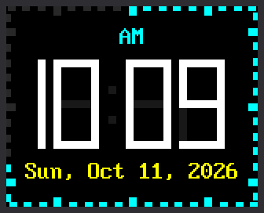

Lab 13: A Digital Clock Face

This face has digits 57 pixels tall, big enough to read from across the room. The date sits below them, and 60 ticks around the edge light up one by one as the seconds pass.
It never flickers, because it follows one rule: only send the pixels that change.
Welcome to Lab 13
 This is the face you can read from the far side of the room. Build it,
and you'll know how a clock changes a number without a single flicker.
Let's make time tick!
This is the face you can read from the far side of the room. Build it,
and you'll know how a clock changes a number without a single flicker.
Let's make time tick!
What You Will Learn
- how one number can hold seven on/off switches
- how the
^operator spots the bars that changed - why unlit bars get a faint "ghost" color
- how 60 ticks fit around a rectangle
Run It
- Open
13-digital-clock-face.pyin Thonny and click Run. - Wait while the screen says
Setting clock. The Pico gets the time over WiFi, as in lab 10. - Find the time in white,
AMorPMabove it, and the date below it. - Watch the edge for a full minute. A tick lights up each second, and the count starts over with each new minute.
Seven Switches in One Number
In lab 09 you built digits from seven bars, lettered a to g:
1 2 3 4 5 6 7 | |
This lab stores a digit as one number made of seven bits. A bit is a tiny switch: 1 for on, 0 for off. Each bar gets one bit. Here is the start of the table:
1 2 3 4 5 6 7 8 | |
The 0b means the number is written in binary, with only 1s and 0s.
Read the bits from the right: a comes first, and g is last on the
left.
Check the 4 by hand. It lights bars b, c, f and g:
| Bar | g | f | e | d | c | b | a |
|---|---|---|---|---|---|---|---|
| Lit in a 4? | yes | yes | no | no | yes | yes | no |
| Bit | 1 | 1 | 0 | 0 | 1 | 1 | 0 |
The bottom row reads 1100110, just like the 4 in the code.
Right to Left Feels Odd
 Reading bits from right to left feels backward at first, and that's
normal. You already know which bars make each digit, and a bit is
just a yes or no for one bar. Write the bits for a 1 on paper, then
check them against the code.
Reading bits from right to left feels backward at first, and that's
normal. You already know which bars make each digit, and a bit is
just a yes or no for one bar. Write the bits for a 1 on paper, then
check them against the code.
Change Only What Changes
When 10:03 becomes 10:04, the last digit changes from a 3 to a 4. Which bars need new paint? Compare the two patterns, one bit at a time:
| Bar | g | f | e | d | c | b | a |
|---|---|---|---|---|---|---|---|
| Old digit, 3 | 1 | 0 | 0 | 1 | 1 | 1 | 1 |
| New digit, 4 | 1 | 1 | 0 | 0 | 1 | 1 | 0 |
| Different? | 0 | 1 | 0 | 1 | 0 | 0 | 1 |
The bottom row has a 1 wherever the rows above it disagree. Python works
out that row in one step, with an operator called XOR, written ^.
It is a spot-the-difference game for bits.
Only bars f, d and a get new paint. Bars b, c and g are lit in both
digits, so the program never touches them and they cannot flicker. This
part of draw_digit() does the work:
1 2 3 4 5 6 7 8 9 10 | |
pieces(new)takes the digit's seven bits and adds six more. They are for small squares that fill the corners where bars meet. That makes 13 pieces.old is Noneis true only the first time, when every piece is painted.changed = lit ^ pieces(old)is the XOR: a 1 for each piece that is different.if changed & (1 << bit)asks, "Is this piece's bit a 1?" If not, the loop skips that piece.- The last two lines pick white or
GHOST, then paint one small rectangle.
Ghosts and a Half Digit
Look closely at the picture. The faint gray bars behind the digits are the unlit ones, painted in a ghost color that is nearly black. To turn a bar off, the program paints it in that color. It never clears an area first, so nothing flashes black.
The first digit is special. On a 12-hour clock it is only ever a 1 or blank, so it needs just bars b and c. The program draws a narrow half digit there, only 5 pixels wide.
Sixty Ticks Around a Rectangle
A round clock has a ring of 60 marks. Here the ring is bent to fit the edge of the screen. Tick 0 is at the top center, and the ticks run clockwise.
Picture an ant walking around the edge, starting at the top center. All the way around is 160 + 128 + 160 + 128 = 576 pixels. By tick 15 the ant has walked 15 × 576 ÷ 60 = 144 pixels. That is 80 to the top right corner, then 64 down the right side. It is halfway down, where the 3 sits on a round clock. Ticks 30 and 45 land where the 6 and the 9 sit.
1 2 3 4 5 | |
TICKS holds all 60 rectangles, worked out once at the start. Each tick
is one small rectangle, so a single fill_rect() paints it.
In a normal second the face sends only the colon and one tick. That is 65 pixels out of the 20,480 on the screen.
Try This
- Near the top, change
BLINK_COLON = TruetoFalse. What stops moving? - Change
GHOST = config.color565(24, 24, 30)toGHOST = config.BLACK. Which look do you like better? - Change
TWELVE_HOUR = TruetoFalsefor a 24-hour clock. Why does the first digit need all seven bars now? - On paper, compare the patterns for 5 (
0b1101101) and 6 (0b1111101). How many bars change when a 5 becomes a 6?
If It Doesn't Work
- The screen says
No secrets.py found. The clock still starts after 3 seconds, with the time Thonny gave the Pico. To use WiFi time, makesecrets.pyas lab 10 shows. - The time is wrong by a whole hour or more. Check
TIMEZONE_HOURSinconfig.py. Central time is -6. - You have no WiFi. Change
SYNC_WITH_WIFI = TruetoFalse.
Big Digits, No Flicker!
 You packed a digit into seven bits and used XOR to find the bars that
changed. You also walked 60 ticks around a rectangle. Next, your clock
learns to read the weather forecast.
You packed a digit into seven bits and used XOR to find the bars that
changed. You also walked 60 ticks around a rectangle. Next, your clock
learns to read the weather forecast.
Next: Lab 14: Weather Clock